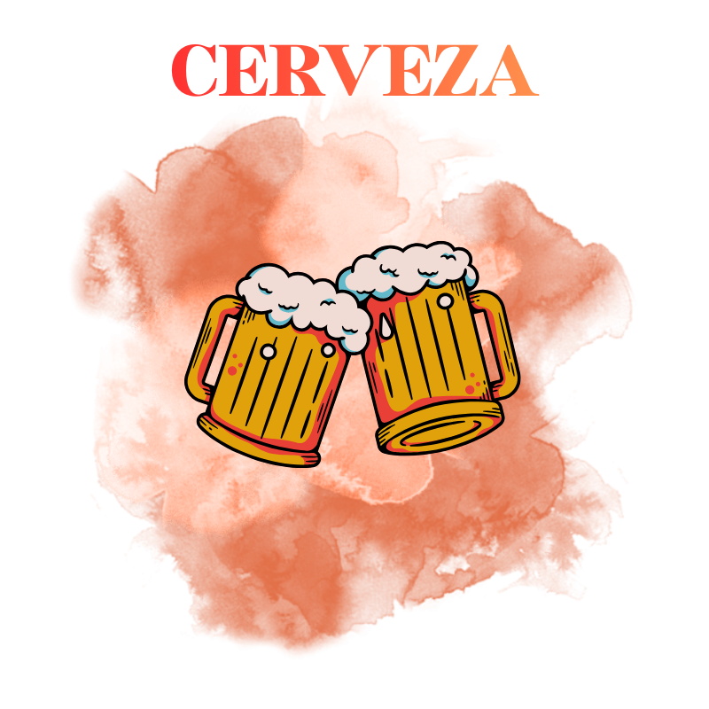

| DERIVADO ALCHOLICO |
|---|
Los derivados alcohólicos de MAGAK se elaboran con ingredientes seleccionados y procesos cuidadosamente controlados haciendo procesos donde se fusionen el sabor y un toque gourmet para obtener productos de sabor refinado y aroma distintivo. Cada bebida refleja pureza, calidad y autenticidad, ideal para disfrutar sola, en cócteles o como acompañamiento en momentos especiales. Gracias a su elaboración natural y a la selección de materias primas de primera calidad, los derivados alcohólicos MAGAK ofrecen una experiencia sensorial completa, con equilibrio entre sabor, aroma y suavidad. |
CERVEZA "SABOR QUE SE DISFRUTA EN CADA SORBO"
|
|
|---|---|
MAGAK produce una cerveza elaborada desde cero donde su ingrediente es la cebada sometida un proceso de fermentación haciendo una cerveza artesanal y con mucho sabor. La cerveza de MAGAK es refrescante, llena de sabor y perfecta para disfrutar en cualquier momento. Elaborada con ingredientes seleccionados y un proceso cuidadoso, ofrece un aroma único, cuerpo suave y un sabor equilibrado que se disfruta solo o acompañado de buena comida y amigos. Cada sorbo refleja la calidad y tradición de MAGAK, convirtiéndola en la compañera ideal para relajarte y compartir momentos especiales generando recuerdos y pidiéndolos disfrutar con el sabor de una cerveza dulce pero refrescante. |
|
|  | |
| INGREDIENTES | PROCESO |
La cerveza MAGAK se elabora principalmente con agua, malta de cebada, lúpulo y levadura, que juntos crean su sabor, aroma, color y alcohol característicos: el agua aporta suavidad, la malta proporciona azúcares fermentables y cuerpo, el lúpulo da amargor y aroma, y la levadura transforma los azúcares en alcohol y gas carbónico. Opcionalmente se pueden añadir azúcares o adjuntos como miel o maíz para mayor sabor o contenido alcohólico, especias y aromatizantes para notas únicas, y clarificantes para mejorar la apariencia, haciendo de cada sorbo una bebida equilibrada, fresca y llena de carácter. |
Para laborar esta cerveza primero se tuvo que calentar la cebada dentro de agua por dos horas a fuego bajo dejando que el agua absorbiera el sabor de la cebada, para después extraer el liquido obtenido y agregarle la levadura y el lúpulo en una botella ya lista con la trampa de aire, después se somete a una etapa de fermentación. |
| INGRENDIENTES BASE | |
La cerveza que fabrica MAGAK es una cerveza que contiene tres ingredientes esenciales para esta cerveza ya que son de suma importancia para dar viada a esta cerveza y que complementadas puedan hacer funcionar el proceso de fermentación. La malta de cebada aporta los azúcares fermentables necesarios para que se produzca el alcohol y el gas carbónico, además de dar color, cuerpo y sabor característico. El lúpulo aporta el amargor que equilibra la dulzura de la malta, da aroma y actúa como conservante natural, protegiendo la cerveza. La levadura es la responsable de la fermentación, transformando los azúcares de la malta en alcohol y dióxido de carbono, y contribuyendo también al aroma y sabor final. Sin cualquiera de estos tres ingredientes, la cerveza no podría formarse correctamente ni desarrollar sus características esenciales. La fermentación es el proceso central en la elaboración de la cerveza, donde la levadura transforma los azúcares de la malta en alcohol y dióxido de carbono. Durante este proceso, que puede durar varios días o semanas según el estilo de cerveza, se desarrollan también aromas y sabores característicos dando vida a la cerveza de MAGAK. |
|
| ©MAGAK.cerveza | |